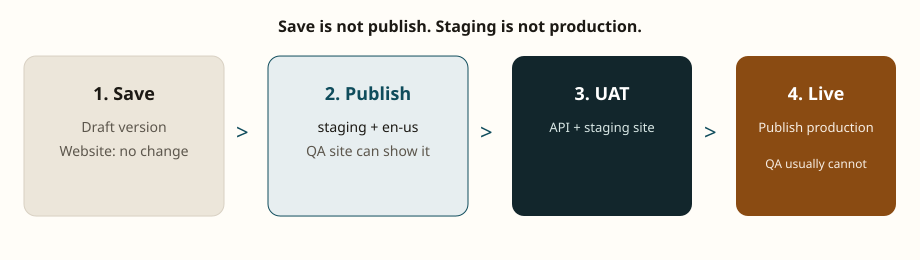

Contentstack Learning / HTML
Contentstack QA tester training


4 daysConcept + labs
8 labsOn a real stack
3 layersCMS / API / app
30 casesReusable test IDs
New to Contentstack? Open Start here (pictures) first.
Then Lab setup. Do not skip API labs.
Open these pages
Start here (pictures)Simple diagrams for new learners — read this first
Training summaryOutcomes, ownership, syllabus, definition of done
Module 01Headless CMS and Contentstack boundaries
Lab setupCreate the Horizon Market sandbox stack
Acceptance packUse on the first real project go-live
Component / template issues41 real project defects when UAT-ing blocks and page templates
Full pathsCopy-paste locations for every HTML file and the canvas
How QA on Contentstack is different
Editors type in Contentstack. The website is a separate app that fetches JSON. A perfect CMS screen can still fail on the live site.


Recommended path
- Training summary — 30–40 minutes
- Modules 01–04 — about 1 day
- Labs 00–08 on a trial stack — 2–3 days
- Checklists on the first client project
- Component / template QA issues — use during template UAT
Horizon Market sandbox
| Item | Value |
|---|---|
| Stack | horizon-market-qa |
| Environments | development, staging, production |
| Locales | en-us (master), fr-fr, de-de |
| Workflow | Draft → In Review → Approved → Published |
| QA role | Read all content; publish to staging only |
Token rule. Delivery token proves published site JSON. Preview token proves drafts.
Management token is for writes only — never in the browser or a repo.
Full local paths
Double-click the launcher or paste a path into File Explorer / Chrome.
HTML home
C:\Users\nmirza.HZI\OneDrive - Horizontal Integration Inc\Documents\CNE+GSE\Contentstack-Learning\html\index.html
One-click launcher
C:\Users\nmirza.HZI\OneDrive - Horizontal Integration Inc\Documents\CNE+GSE\Contentstack-Learning\Contentstack-QA-Training.html
Canvas (keep open beside chat in Cursor)
C:\Users\nmirza.HZI\.cursor\projects\c-Users-nmirza-HZI-OneDrive-Horizontal-Integration-Inc-Documents-CNE-GSE-Contentstack-Learning\canvases\qa-training-summary.canvas.tsx